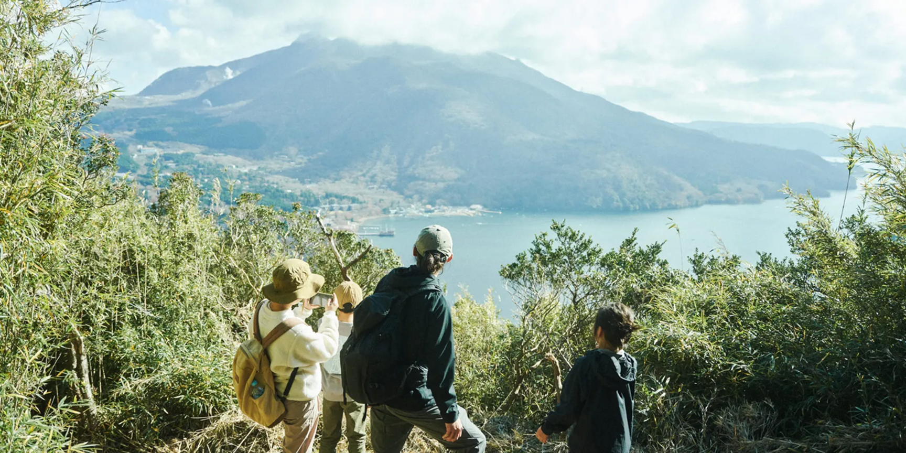
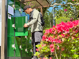
HAKONATUREは、アウトドア拠点の運営、ローカルガイドたちによるユニークなプログラムやツアーの開発、おすすめコース情報の発信、コミュニティーやイベントの運営を通して、箱根のアウトドアの魅力を届けるプロジェクトです。
プロジェクトについてPICKUP NEWS
ジャーナル
箱根の自然を楽しめるモデルコースを紹介します。
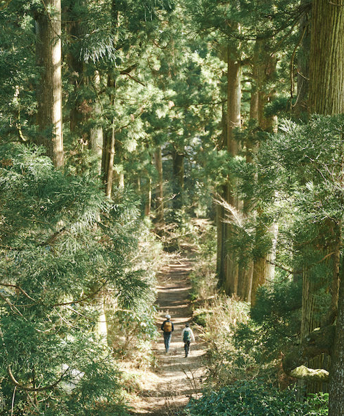
林紗代香さんはトラベルカルチャーマガジン「TRANSIT」の編集長。みずから世界各国へ取材に飛び回っていて、名所だけでなく、その土地の歴史文化も見て回る。 そんな林さんが昨年から東京と箱根の二拠点生活を開始。箱根の自然に惹かれたという林さんが、箱根出身のガイド金子森さんの案内で、歴史と文化の詰まった旧街道を行く。
約5時間
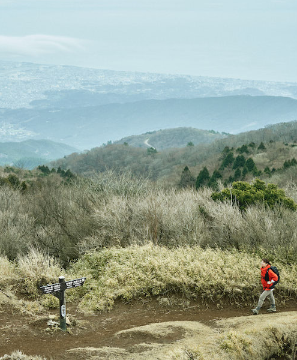
箱根は登山ルートがたくさんある。そして街中の人混みとは裏腹に人気の少ない穴場的な場所も多い。今回は、アウトドア関連の仕事も多い、焚き火マイスターこと猪野正哉さんと、奥さまの睦さんがちょっとマイナーなルートで明神ヶ岳登山を楽しむ。だけじゃなく、下山後には箱根ならではのご褒美も待ち構えている様子。
約7.5時間
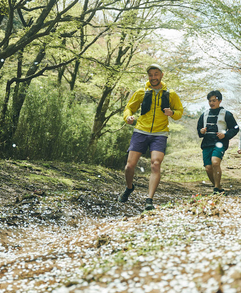
アウトドアフィールドとしても多様な顔をもつ箱根。登山はもちろん、サイクリングや釣りなど、さまざまなアクティビティが楽しめるけど、今回はトレイルランニングのおすすめコースをご紹介。案内してくれるのは、トレイルランニング歴12年。東京・東神田でトレイルランニング／ランニング専門店「ランボーイズ！ランガールズ！」を営む桑原慶さん。
約5時間
Experience all four distinct breathtaking nature of Hakone. By discovering beauty of nature, you discover yourself.
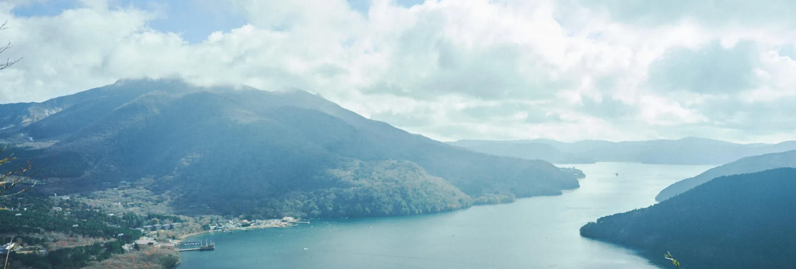
ツアー/イベント
箱根を知り尽くしたネイチャーガイドとのツアーやイベント・ワークショップなどをご予約いただけます。
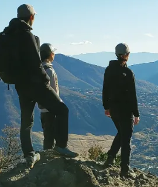
国立公園である箱根の豊かな自然をフィールドに、これからハイキングや登山などを始めたい方に向けたプログラムです。THE NORTH FACEなどを手掛けるGOLDWINとの共同企画。
View More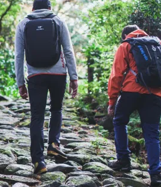
箱根湯本を拠点に定期開催している地元ガイドによるネイチャーツアーです。宿場町である箱根が長い年月にわたり培ってきた歴史・文化・自然を通じて箱根の原点を感じることができる内容です。
View More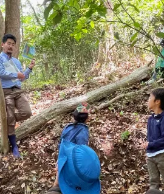
箱根の森を探索するツアーやアートワークショップ、トレイルランイベントなど、箱根の自然を気軽に体感できる各種アウトドアイベントです。小さなお子様でも楽しめるイベントも開催しています。
View More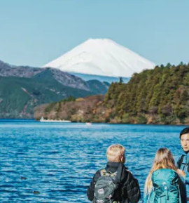
Explore the rich culture, history, and nature of the Hakone area with English-speaking guides. All the guides are certified professionals. Travel with a local, travel like a local.
View MoreExperience all four distinct breathtaking nature of Hakone. By discovering beauty of nature, you discover yourself.
スポット
自然体験の中で立ち寄れるおすすめスポットを紹介します。
箱根湯本・塔ノ沢・畑宿エリア
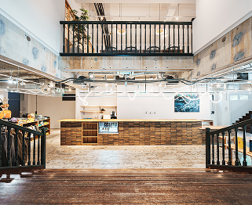
HAKONATURE BASEは、箱根の自然をもっと楽しむためのフィールドアクティビティ拠点です。アクティビティ前後に立ち寄り、山に入るた…
箱根湯本・塔ノ沢・畑宿エリア
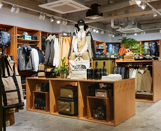
アウトドアウェアやアクティビティギアなど、箱根でアウトドアを楽しみたい方向けの品揃え。限定商品も取り扱っています。
箱根湯本・塔ノ沢・畑宿エリア
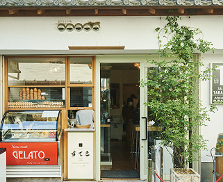
こだわりの食材を使った創作ジェラテリア。季節や地元の素材を生かしたオリジナルジェラートを楽しめます。
PICKUP TAG
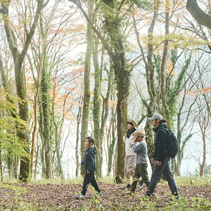
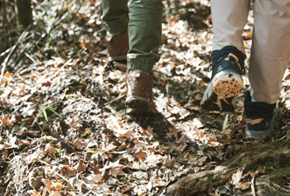
By discovering
beauty of nature,
you discover yourself.
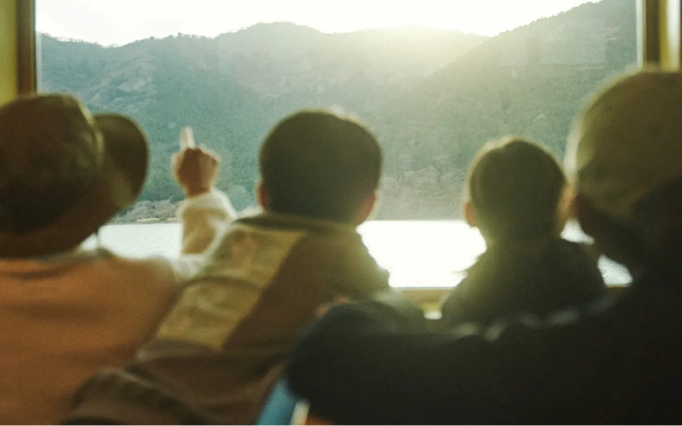
Experience
all four distinct
breathtaking
nature of Hakone.
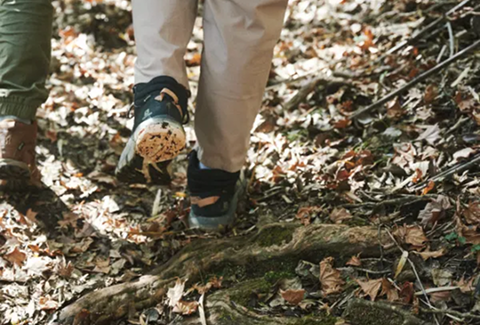